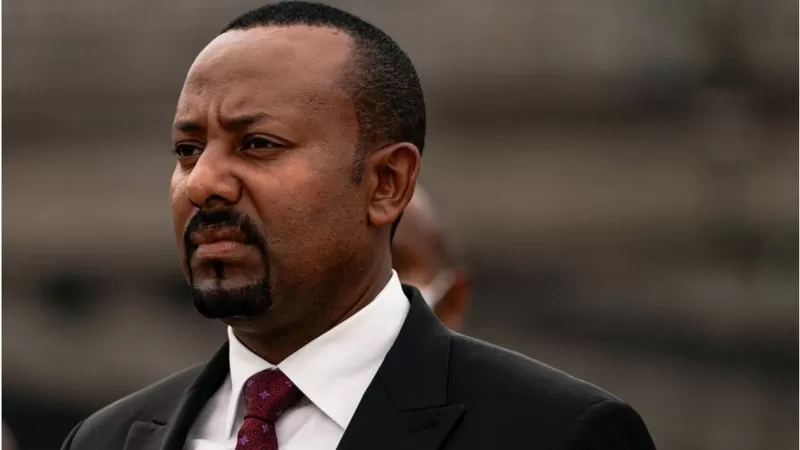
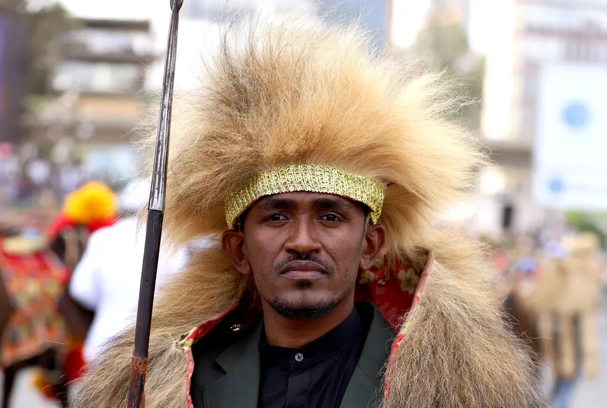

የጠቅላይ ሚኒስትር ዐቢይ የአራት ዓመት ጉዞ በወፍ በረር ሲቃኝ
21 ሚያዝያ 2022

አራት ዓመት ወደ ኋላ መለስ ብለን መጋቢት 24/2010ን ብንቃኝ ኢትዮጵያ አዲስ ጠቅላይ ሚኒስትር መሾሟን እናገኛለን።
ጠቅላይ ሚኒስትር ዐቢይ አሕመድ (ዶ/ር) ወደ ሥልጣን መምጣታቸውን ተከትሎ በአገሪቱ ውስጥ በርካታ ለውጦች ተካሂደዋል። መንግሥት በእነዚህ ዓመታት ውስጥ በርካታ ለውጥ አምጥቻለሁ ቢልም አገሪቱ በፖለቲካ ረገድ በርካታ ችግሮችን አስተናግዳለች። ከሁሉ ጎልቶ የወጣው ደግሞ በጠቅላይ ሚኒስትር ዐቢይ አስተዳደር እና በህወሓት መካከል የነበረው አለመግባባት አገሪቱን ወደ ጦርነት አዙሪት መመለሱ ነው።
መጋቢት 24/2010 ዓ.ም
በኢትዮጵያ የተለያዩ አካባቢዎች ለአራት ዓመታት የተካሄዱ ተቃውሞዎችን ተከትሎ ጠቅላይ ሚኒስትር ዐቢይ አሕመድ ወደ ሥልጣን ከመጡ አራት ዓመታት ሞላቸው። ጠቅላይ ሚኒስትሩ ሥልጣን በተረከቡበት ጊዜ ባሰሙት ንግግር ለደረሰው የሰው ሕይወት እና የንብረት ጥፋት "መጪው ጊዜ በኢትዮጵያችን የፍትህ እና የይቅርታ ጊዜ ነው" በማለት ይቅርታ ጠይቀዋል። "በዜጎቻችን ሕይወት እና በግልም በጋራም ንብረቶቻችን ላይ ቀላል የማይባል ጉዳት ደርሷል። ይኸንን ሁላችንም ማስቀረት እንችል እና ይገባንም ነበር። በተለያየ ጊዜ መስዋዕትነት ለከፈሉ የመብት ተከራካሪዎች ፖለቲከኞች፣ በቅጡ ሳይቧርቁ ሕይወታቸው ለተቀጠፈ ለውጥ ፈላጊ ወጣቶች፣ ለሥነ-ልቦናዊ እና አካላዊ ቀውስ ለተዳረጉ ቤተሰቦችና ግለሰቦች ከልብ የመነጨ ይቅርታ እጠይቃለሁ።"
- link1
- link2
- link3
ጠቅላይ ሚኒስትር ዐቢይ በወቅቱ "አዲሱ የዲሞክራሲ ሥርዓት እውን አንዲሆን አዕላፍ ተሰውተዋል" ያሉት ጠቅላይ ሚኒስትሩ "ታዳጊውን ዲሞክራሲያችንን ለማዳበር ግን ተጨማሪ የህይወትም ሆነ የአካል መስዋዕትነት አያስፈልግንም" ብለው ነበር። ጠቅላይ ሚኒስትር አብይ ለተፎካካሪ ፓርቲ አመራሮች ባስተላለፉት መልዕክት ፓርቲዎች "በነጻነት እንዲንቀሳቀሱ" መንግሥት እንደሚሻ ጠቁመው፤ "የተመቻቸ እና ፍትሃዊ የመወዳደሪያ ሜዳ እንዲኖር በመንግሥት በኩል ጽኑ ፍላጎት አለ" ብለዋል። የእርሳቸውን ወደ ሥልጣን መምጣትን ተከትሎም ሞት ተፈርዶባቸው የነበሩ እሰረኞች ነጻ ወጡ፣ አሸባሪ ተብለው በነበሩ አካላት ምትክ መንግሥት "አሸባሪዎቹስ እኛ ነን" በማለት ብዙዎችን ከእስር ለቀቀ። ኢትዮጵያን ጥለው ለመሰደድ የተገደዱ ተፎካካሪ የፖለቲካ ፓርቲዎችና ጋዜጠኞችም ወደ አገራቸው ተመለሱ። በኤርትራና በኢትዮጵያ መካከል ያሉትን ልዩነቶች ለመፍታት ዝግጁነታቸውንም አስታውቀው፤ ከኤርትራ መንግሥት ጋር እርቀ ሰላም ወረደ። ጠቅላይ ሚኒስትር ዐቢይ በኢትዮጵያ እና ኤርትራ መካከል የነበረውን ለሁለት አስርት ዓመታት የዘለቀ ቅራኔ ወደ ሠላም እንዲመለስ ላደረጉት አስተዋጽኦም የሰላም ኖቤል ሽልማት ተቀብለዋል። ጠቅላይ ሚኒስትር ዐቢይ የኖቤል ሽልማትን ያገኙት በቀዳሚነት በኢትዮጵያና በኤርትራ መካከል ለሁለት አስርታት የቆየውን የድንበር ፍጥጫ እንዲያበቃ በማስቻላቸው ቢሆንም፣ በተጨማሪም በአገራቸው ውስጥ የዲሞክራሲያዊ ለውጥ እርምጃ በመጀመራቸው ነበር። የጠቅላይ ሚኒስትር ዐቢይን ወደ መሪነት መምጣት ተከትሎ በወቅቱ ኢኮኖሚውን ነፃ ለማድረግ በሚል በመንግሥት ይዞታ ስር የሆኑትን ቴሌ ኮሙዩኒኬሽንን፣ አየር መንገድን በከፊል ወደ ግል ለማዘዋወር ተወስነ።
በወቅቱ ይህ ውሳኔ የአገሪቱን የኢኮኖሚ እድገት ለማስቀጠል፣ የውጭ ምንዛሬ እጥረቱንና የዋጋ ግሽበቱን ለመቋቋም፣ የገቢ ማመንጨት አቅምን ለማጠናከርና የወጪ ንግዱን ለማቀላጠፍ በሚል የተወሰነ ነበር። ለዚህ ውሳኔ ሌላኛው ምክንያት የሆነው ደግሞ የኢትዮጵያ የብድር መጠን ከፍ በማለቱም እንደሆነ ተነግሯል። ይህንን ተከትሎም ኢትዮጵያ፣ በኢትዮ ቴሌኮም ከ120 ዓመታት በላይ በብቸኝነት ተይዞ ወደ ነበረው ዘርፍ እንዲገባ የበርካታ ተቋማት ስብስብ ለሆነው ኩባንያ የቴሌኮም አገልግሎት ፈቃድ መስጠቷን አስታወቀች። በዚህም መሠረት ግሎባል ፓርትነርሽፕ ፎር ኢትዮጵያ የተባለውና የስድስት ኩባንያዎች ጥምረት የሆነው ተቋም አገሪቱ ለጨረታ አቅርባቸው ከነበሩት ሁለት የቴሌኮም ፈቃዶች ውስጥ አንዱን በማሸነፍ በዘርፉ እንዲሰማራ መመረጡን ይፋ ተደርጓል። ምንም እንኳ እስካሁን ድረስ ይህ ነው የሚባል ደረጃ ላይ ባይደርስም በወቅቱ ከቴሌኮም ዘርፉ በተጨማሪ የኢንደስትሪ መንደሮችን፣ የስኳር ፋብሪካዎችን፣ ሆቴሎችን እና ሌሎች አምራች ድርጅቶችን ወደ ግል ለማዞር ተወስኖ ነበር።
የሃጫሉ መገደልና እስር
የታዋቂው ድምጻዊ ሃጫሉ ሁንዴሳ ግድያ በአገሪቱ አጠቃላይ ሁኔታ ላይ ከፍተኛ ለውጥ ካመጡት ክስተቶች መካከል ቀዳሚው ነው። ሰኞ ሰኔ 22/2012 ዓ.ም ምሽት የሃጫሉ ሁንዴሳ ግድያ እንደተሰማ ወዲያው ነበር በአዲስ አበባና በአንዳንድ የኦሮሚያ አካባቢዎች ሁከትና ተቃውሞ የተቀሰቀሰው። ከድምጻዊው ግድያ በተጨማሪ የአስከሬን ሽኝትና ቀብሩ የሚፈጸምበት ቦታ ያስከተለው ውዝግብ የተፈጠረውን ውጥረት በከፍተኛ ሁኔታ አጡዞት ነበር። በሃጫሉ ሁንዴሳ ግድያ ሰበብነት በተለያዩ ስፍራዎች በተፈጸሙ ጥቃቶች ከ150 በላይ ሰዎች በአሰቃቂ ሁኔታ ተገድለዋል። በአንዳንድ ከተሞች ላይ ደግሞ ሆቴሎች፣ የንግድ ተቋማት፣ የመንግሥት ቢሮዎች፣ የግለሰቦች መኖሪያ ቤቶችና ሌሎችም በተፈጸመባቸው ጥቃት ወድመዋል። ከሰኔ 23/2012 ከሰዓት በኋላ ጀምሮም በርካታ ፖለቲከኞችና በሺህዎች የሚቆጠሩ በሁከቱ ተሳትፈዋል የተባሉ ሰዎች በፀጥታ ኃይሎች ቁጥጥር ስር ዋሉ። በዚህም መሠረት ጠቅላይ ሚኒስትር ዐቢይ አህመድ ወደ ሥልጣን ከመጡ በኋላ የተከፈተባቸው ክስና የተጣለባቸው እገዳ ተነስቶ ወደ አገር ቤት ከገቡ የፖለቲካ ቡድኖች መሪዎችና ተጽእኖ ፈጣሪ ግለሰቦች መካከል አንዱ የሆነው ጃዋር መሐመድ ፣ በቀለ ገርባ፣ እስክንድር ነጋ እና ሌሎችም ተቃዋሚ ፖለቲከኞች ለእስር ተዳረጉ።
ሁለት አዳዲስ ክልሎች
ኢትዮጵያ ሁለት ተጨማሪ አዳዲስ ክልሎችን ያገኘችው ጠቅላይ ሚኒስትር ዐቢይ ወደ ሥልጣን ከመጡ ወዲህ ነው። ለዓመታት የበርካታ ብሔር ብሔረሰቦችና ሕዝቦች ማዕከል ከሆነው የደቡብ ክልል በመውጣት ራሱን የቻለ ክልል ለመመስረት ጥያቄ ሲቀርብበት የነበረው የሲዳማ ዞን፣ ቀደም ሲል ካጋጠመ ውዝግብ እንዲሁም ደም ካፋሰሰ ግጭትና ጥቃት በኋላ ኅዳር 10/2012 ዓ.ም በተካሄደ ሕዝበ ውሳኔ ክልል ለመሆን ችሏል። ስድስተኛው አገራዊ ምርጫ ከተካሄደ በኋላ አምስት ዞኖች እና አንድ ልዩ ወረዳ ከደቡብ ብሔር፣ ብሔረሰቦች እና ሕዝቦች ክልል ወጥተው የጋራ አንድ ክልል ለመመስረት ሕዝበ ውሳኔ አካሄደዋል። በዚህ በተደረገ ሕዝበ ውሳኔ መሰረትም የኮንታ ልዩ ወረዳ፣ የምዕራብ ኦሞ ዞን፣ የቤንች ሸኮ ዞን፣ የካፋ ዞን፣ ዳውሮ ዞን እና የሸካ ዞን በጋራ 11ኛውን ክልል በመሆን በይፋ ተመስርተዋል።
- link1
- link2
- link3
እነዚህ ሁለት ክልሎች ኢትዮጵያ ያላትን የክልሎች ቁጥር አስራ አንድ አድርሰውታል። ከሌሎቹ የአገሪቱ ክልሎች በተለየ ከ50 በላይ ብሔር፣ ብሔረሰቦችና ሕዝቦችን የያዘው የደቡብ ክልል ለእነዚህ ሁለት ክልሎች ጥያቄ መልስ ቢሰጥም ከአስር የማያንሱ ሌሎች ዞኖችም ተመሳሳይ ጥያቄ አቅርበዋል። በተለይ የወላይታ ዞን ተወካዮቹ ከደቡብ ምክር ቤት መውጣታቸውንና ዞኑ ላቀረበው ጥያቄ ምላሽ እንዲሰጠው ግፊት ማድረጉን አጠናክሮ በመቀጠሉ ውጥረት ተከስቶ ነበር። ከዚሁ ጋር በተያያዘ የአካባቢው አመራሮች ሌሎችም በስብሰባ ላይ እንዳሉ በፀጥታ ኃይሎች በቁጥጥር ስር በመዋላቸው አለመረጋጋት ተቀስቅሶ ከ20 በላይ የሚሆኑ ሰዎች ሕይወት መጥፋቱ ተዘግቧል።
ኮሮናቫይረስ እና የአገራዊ ምርጫ መራዘም
ጠቅላይ ሚኒስትር ዐቢይ ወደ ሥልጣን ከመጡ በኋላ በተለያዩ አጋጣሚዎች ምርጫ ቦርድን ነጻና ገለልተኛ በሆነ ሁኔታ እንዲዋቀር በማድረግ በ2012 ዓ.ም ይካሄዳል ተብሎ የነበረው ምርጫ ከዚህ በፊት ከተካሄዱት ሁሉ የተለየ እንዲሆን እንደሚፈልጉ በተደጋጋሚ ተናግረው ነበር። በዚህም መሠረት የቀድሞዋ ፖለቲከኛ ብርቱካን ሚደቅሳ ኃላፊነቱን ይዘው ቦርዱ የሚተዳደርባቸው የሕግና የመዋቅር መሻሻያዎች ተደርገው፤ ስድስተኛው አገራዊና ክልላዊ ምርጫ የሚካሄድበት የጊዜ ሰሌዳ ወጥቶ፣ በመጀመሪያ ነሐሴ 10 ከዚያም ማሻሻያ ተደርጎ ነሐሴ 23/2012 ዓ.ም የድምጽ መስጫ ቀን እንዲሆን ቀን ተቆርጦ ነበር። የኮሮናቫይረስ ኢትዮጵያ ውስጥ መከሰቱን ተከትሎ ቦርዱ ባወጣው የጊዜ ሰሌዳ መሠረት ምርጫውን ማካሄድ የማይችል መሆኑን በመግለጽ ለምርጫው መከናወን ያለባቸው ሥራዎች ለጊዜው እንዲቆሙ መወሰኑን መጋቢት 22/2012 አስታወቀ። በዚህም መሠረት የኮሮናቫይረስ ወረርሽኝ ስጋት ተወግዶ የሚኖረውን ተጨባጭ ሁኔታ እንደገና ገምግሞ አዲስ የምርጫ ሥራ ዝግጅት ዕቅድና የጊዜ ሰሌዳ በማውጣት እንቅስቃሴውን እንደሚያስጀምር አሳውቋል። ይህንንም በማስመለከት የኢትዮጵያ ብሔራዊ ምርጫ ቦርድ ያለውን ተጨባጭ ሁኔታ ጠቅሶ ምርጫውን ማካሄድ እንደማይችል ለሕዝብ ተወካዮች ምክር ቤት በማሳወቁ፣ ምክር ቤቱ የቦርዱን የውሳኔ ሐሳብ በመቀበል በጉዳዩ ላይ የሕገ መንግሥት ትርጉም እንዲሰጥ መጠየቁ ይታወሳል። የፌዴሬሽን ምክር ቤትም የሕገ መንግሥት ጉዳዮች አጣሪ ጉባኤ በወረርሽኙ ምክንያት ምርጫ በወቅቱ ማካሄድ ባለመቻሉ እንዲሁም የምክር ቤቶችንና የአስፈፃሚ አካላትን የሥራ ዘመን አስመልክቶ በቀረበለት የሕገ መንግሥት ትርጉም መሰረት የበሽታው ስጋት እስካለ ድረስ የፌደራልና ክልል ምክር ቤቶች ሥራቸውን እንዲቀጥሉ ወሰነ።
ከዚህ በተቃራኒ ግን በምንም ምክንያት ምርጫው ሊራዘም አይገባም ያለው የትግራይ ክልል በዚያው ዓመት በተናጠል ምርጫ ለማካሄድ ሲዘጋጅ ቆይቶ ጳጉሜ 04/2012 ዓ.ም መራጮች ድምጽ እንዲሰጡ አደረገ። የፌዴሬሽን ምክር ቤትም ምርጫው ሕግን የጣሰ በመሆኑ ተቀባይነት ስለሌለው እንዳልተካሄደ ይቆጠራል ሲል ለምርጫው እውቅና እንደማይሰጥ ገለፀ። ከዚህ በኋላም በፌደራል መንግሥቱ እና በትግራይ ክልል መካከል ያለው አለመግባባት እየተካረረ በመሄድ ጥቅምት 24/2013 ዓ.ም የህወሓት ኃይሎች የሰሜን ዕዝን ማጥቃታቸውን ተከትሎ ጦርነት ተቀሰቀሰ።
የሰሜን ኢትዮጵያ ጦርነት
ጠቅላይ ሚኒስትር ዐቢይ አሕመድ የኖቤል የሰላም ሽልማት ማሸነፋቸውን ተከትሎ ባደረጉት ንግግር ላይ ጦርነት ምን ያክል አስከፊ እንደሆነና ምን ያክል እንደሚያጨካክን ተናግረው ነበር። ነገር ግን ላለፉት አስራ ስድስት ወራት የፌደራል መንግሥቱ ሠራዊት በሰሜናዊ ኢትዮጵያ የህወሓት አመራሮች በአገሪቱ ሠራዊት ላይ በፈጸሙት ጥቃት ምክንያት አስካሁን ያልተቋጨ ደም አፋሳሽ ጦርነት እየተካሄደ ነው። በህወሓት እና በጠቅላይ ሚኒስትር ዐቢይ አሕመድ አስተዳደር መካከል የነበረው አለመግባባት ተካርሮ ወደ ጦርነት ከተሸጋገረ አስራ ስድስት ወራት ተቆጥረዋል። ጦርነቱ ከተጀመረበት ከትግራይ ክልል ተሻግሮ ወደ አማራ እና አፋር ክልሎች የተስፋፋ ሲሆን በዚህም ዜጎች ላይ ሞት፣ ርሃብ፣ እና መፈናቀል አስከትሏል። ጠቅላይ ሚኒስትር ዐቢይ፤ ጥቅምት 24/2013 ዓ. ም የትግራይ ኃይሎች በትግራይ የሚገኘው ትልቁንና በትጥቅ በተደራጀው ሰሜን ዕዝ ላይ ጥቃት መፈጸማቸውን ተከትሎ ነበር ወታደራዊ እርምጃ እንዲወሰድ ትዕዛዝ ያስተላለፉት። ውጥረቱ ወደ ወታደራዊ ግጭት ከማምራቱ በፊት በፌደራል መንግሥትና የትግራይን ክልልን ይመራ በነበረው ህወሓት መካከል የቆየው መቃቃር የተባባሰው በኮሮናቫይረስ ወረርሽኝ ምክንያት የፌዴሬሽን ምክር ቤትም ሆነ ፓርላማው በአገሪቱ ታቅዶ የነበረው ምርጫ እንዲራዘም የሰጡትን ውሳኔ ባለመቀበል የትግራይ ክልል የተናጠል ምርጫ ማድረጉን ተከትሎ ነው። ጠቅላይ ሚኒስትር ዐቢይ አሕመድ ወደ ሥልጣን ከመጡ ወዲህ ባሉት አራት ዓመታት ውስጥ ለመጀመሪያ ጊዜ ሁለት ቡድኖች አሸባሪ ተብለው ሚያዚያ 28/2013 ዓ.ም ተፈርጀዋል። ህወሓት እና ሸኔ ሽብርተኛ ተብለው የተፈረጁት በሰሜን ኢትዮጵያ የሚካሄደው ጦርነት እየተባባሰ በመጣበት ወቅት ነበር። ባለፈው ዓመት ጥቅምት ወር መጨረሻ ላይ በጀመረው የሰሜን ኢትዮጵያ ጦርነት የተነሳ፣ በትግራይ መሠረታዊ አገልግሎቶች ሙሉ በሙሉ ተቋርጧል። በአሁኑ ወቅት ወደ ክልሉ የሚገባው የሰብዓዊ እርዳታ አነስተኛ በመሆኑ እና በቀጠለው ጦርነት ምክንያት ስለተደናቀፈ የከፋ ሰብዓዊ ቀውስ እንደተፈጠረ የዓለም አቀፍ ድርጅቶች እየገለፁ ይገኛሉ። የዓለም ምግብ ፕሮግራም ትግራይ ውስጥ ብቻ 4.6 ሚሊዮን ሰዎች፣ የምግብ እህል እርዳታ ጠባቂዎች መሆናቸውን ይናገራል። ድርጅቱ በጥር ወር መጨረሻ ላይ ይፋ ባደረገው መረጃ 40 በመቶ የሚሆነው የትግራይ ሕዝብ "ለከባድ የምግብ እጥረት" ተጋልጧል ብሏል። ከታኅሣሥ 2014 ዓ.ም. አጋማሽ ጀምሮ የምግብ እርዳታ ወደ ትግራይ እንዳልተላከ የተናገሩት የዓለም ጤና ድርጅት ዳይሬክተሩ፣ ከአጠቃላይ ሕዝቡ 83 በመቶ የሚሆነው የምግብ ዋስትና ችግር ላይ መሆኑን ገልጸዋል። የዓለም ጤና ድርጅት ባደረገው ዳሰሳ በትግራይ ያሉ አንድ ሦስትኛ የሚሆኑት የጤና ተቋማት፤ "ተጎድተዋል አልያም ወድመዋል" ብለዋል ዋና ዳይሬክተሩ። የዓለም ጤና ድርጅት ዋና ዳይሬክተር ዶ/ር ቴድሮስ አድሃኖም በአሁኑ ወቅት ከየትኛውም የዓለማችን ክፍል በላይ የሰዎች ጤና አሳሳቢ ደረጃ ላይ የሚገኘው በትግራይ ክልል ውስጥ ሲሉ ተናግረዋል።
ምርጫ 2013
ኢትዮጵያ ስድስተኛውን አገራዊ ምርጫ ያካሄደችው ባለፈው ዓመት ሰኔ ወር ላይ ነበር። በዚህ ሰኔ 14/2013 ዓ.ም በተካሄደው የአገሪቱን ብሔራዊ ምርጫ ገዢው ብልጽግና ፓርቲ በከፍተኛ ድምፅ አሸንፏል። በወቅቱ ምርጫ ቦርድ እንዳስታወቀው ብልጽግና ከ436 መቀመጫዎች ውስጥ 410 ያሸነፈ ሲሆን፣ ለቀጣዩ አምስት ዓመታትም መንግሥት መመስረት የሚያስችለውን ወንበር አግኝቷል። በስድስተኛው አገራዊ ምርጫ በኦሮሚያ ክልል ውስጥ የሚንቀሳቀሱ እና ጠንካራ ተፎካካሪ ይሆናሉ ተብለው ከተጠበቁት መካከል የኦሮሞ ነጻነት ግንባር (ኦነግ) እና የኦሮሞ ፌደራሊስት ኮንግረስ (ኦፌኮ) "ተገፍተናል" በሚል በምርጫው ሳይሳተፉ ቀርተዋል። በትግራይ ክልልም እየተካሄደ ባለው ጦርነት ምክንያት ምርጫ ሳይካሄድ ቀርቷል። በስድስተኛው አገራዊ ምርጫ የተቃዋሚ ፖርቲዎች ያሸነፏቸው የሕዝብ ተወካዮች ምክር ቤት መቀመጫ ብዛት 11 ሲሆን የግል ተወዳዳሪዎች ደግሞ አራት አሸንፈዋል። በአማራ ክልል አብን 5 የፓርላማ መቀመጫዎችን ሲያገኝ፣ በደቡብ ብሔር ብሔረሰቦችና ሕዝቦች ክልል ኢዜማ 4 መቀመጫዎችን እንዲሁም የጌድዮ ሕዝቦች ዲሞክራሲያዊ ፓርቲ 2 የፓርላማ መቀመጫዎችን አግኝተዋል። የግል ተወዳዳሪዎችን በተመለከተ በአዲስ አበባ አንድ የግል ተወዳዳሪ ያሸነፉ ሲሆን በኦሮሚያ ክልል ደግሞ ሦስት አሸንፈዋል።
በ40 ዓመት ውስጥ ከታዩት የከፋ ድርቅ
በዚህ ዓመት በአፋር፣ በኦሮሚያ፣ በደቡብ ብሔር ብሔረሰቦችና እና ሕዝቦች እንዲሁም በሶማሌ ክልሎች የከፋ ድርቅ በማጋጠሙ ሚሊዮኖች ለችግር መጋለጣቸውን መንግሥታዊ ያልሆኑ ድርጅቶች አስታውቀዋል። በአራት አስርት ዓመታት ውስጥ ለከፋ ድርቅ መጋለጣቸው የተገለጸው ደቡብ፣ የኦሮሚያና የሶማሌ ክልልን ጨምሮ በአራቱ ክልልሎች 7 ሚሊዮን በሚሆኑ ነዋሪዎች ላይ አስከፊ ችግር በመደቀኑ አስቸኳይ ሰብዓዊ እርዳታ ሊደርስላቸው እንደሚገባ ተገልጿል። በአራቱ ክልሎች ባጋጠመው ሦስት ተከታታይ የዝናብ ወቅቶች መጨናገፍ የተነሳም በተከሰተ ድርቅ በርካታ እንስሳት ሞተዋል፣ ሰብሎች ወድመዋል፣ የውሃና የምግብ እጥረት በርካቶችንም እያፈናቀለ መሆኑን በኢትዮጵያ የዩኒሴፍ ተወካይ ጂያንፍራንኮ ሮቲግሊያኖ ለቢቢሲ ተናግረዋል። ተወካዩ ለቢቢሲ እንዳስረዱት 7 ሚሊዮን የሚጠጉ ሰዎች አስቸኳይ ሰብዓዊ እርዳታ የሚያስፈልጋቸው ሲሆን በርካቶችም ቀያቸውን ሸሽተው እየተፈናቀሉ እንደሚገኙም ነው።
ግጭቶችና መፈናቀሎች
ጠቅላይ ሚኒስትር ዐቢይ ወደ ሥልጣን ከመጡ ወዲህ ሌላው በጉልህ የተስተዋለው ችግር፣ በተለያዩ የአገሪቱ አካባቢዎች የሚከሰቱ የእርስ በእርስ ግጭቶችና መፈናቀሎች ናቸው። በተለይም በኦሮሚያ ክልል ምሥራቅና ምዕራብ ወለጋ ዞኖች፣ በቤንሻንጉል፣ በአማራ ክልል ድንበር አካባቢዎች ያሉ ግጭቶች እንዲሁም እነርሱን ተከትለው የሚደርሱ መፈናቀሎች እየተባባሱ መጥተዋል። እነዚህ ጥቃቶች እና መፈናቀሎች በተለይ የሰሜን ኢትዮጵያ ጦርነትን ተከትሎ የተባባሱ ሲሆን የጠቅላይ ሚኒስትር ዐቢይ መንግሥትንም የዜጎችን ሰላምና ደኅንነት ማስጠበቅ አልቻለም በሚል ከሚተችባቸው ጉዳዮች መካከል ዋነኛው ሆኗል። ኢትዮጵያ ውስጥ በልሂቃን መካከል በአገራዊ ጉዳዮች ላይ መግባባት አለመኖሩ፣ በመካከላቸው ያለው አለመተማመን እና ጥርጣሬ የዴሞክራሲ የሽግግር ሂደቱን ፈታኝ በማድረጉ የኢትዮጵያ አገራዊ የምክክር ኮሚሽን ተቋቁሞ ሥራ ጀምሯል። ይህ ኮሚሽንም ኢትዮጵያ ውስጥ ባሉ መሠረታዊ አገራዊ ጉዳዮች ዙሪያ ምክክር በማድረግና ብሔራዊ መግባባትን ለመፍጠር የሚያስችል ሂደትን የሚመራና የሚያስተባብር አካል ይሆናል ተብሏል። እነዚህ ጠቅላይ ሚኒስትር ዐቢይ ሥልጣን ከተረከቡ በኋላ ባለፉት አራት ዓመታት ውስጥ ከተከሰቱ ጉዳዮች መካከል ጥቂቶቹ ሲሆኑ፣ ከእነዚህ በተጨማሪ በርካታ ክስተቶች በምጣኔ ሀብት፣ በፖለቲካው፣ በማኅበራዊውና በሌሎችም መስኮች ተስተውለዋል። ነገር ግን በትግራይ ውስጥ ተቀስቅሶ አስካሁን እየተካሄደ ያለውን የሰሜን ኢትዮጵያን ጦርነት ያህል የጠቅላይ ሚኒስትሩን አስተዳደር የፈተነ ጉዳይ አልተከሰተም። ይህንን በብዙ መልኩ በአገሪቱ ላይ ከባድ ተጽእኖን ያስከተለውን ጦርነት ለመቋጨት በመንግሥት በኩል ፍላጎት መኖሩ የተገለጸ ሲሆን፣ ሌሎች ወገኖችም በሽምግልና መፍትሔ ለማምጣት እየጣሩ ነው። ውጤቱም በሂደት የሚታይ ይሆናል።